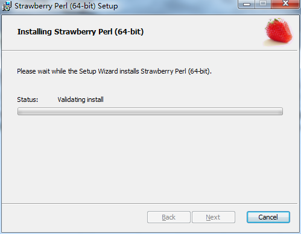
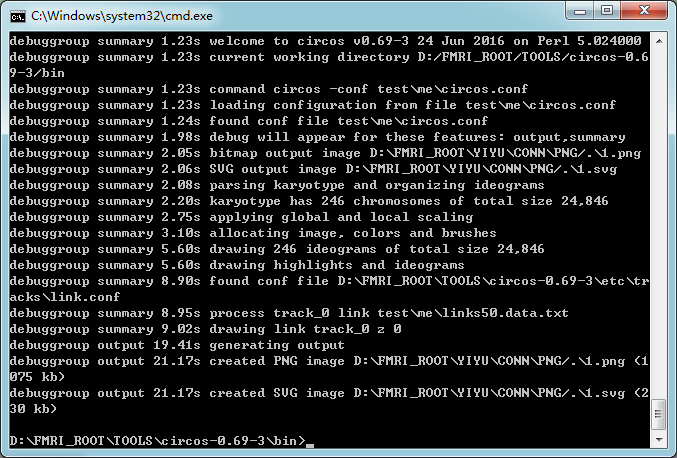
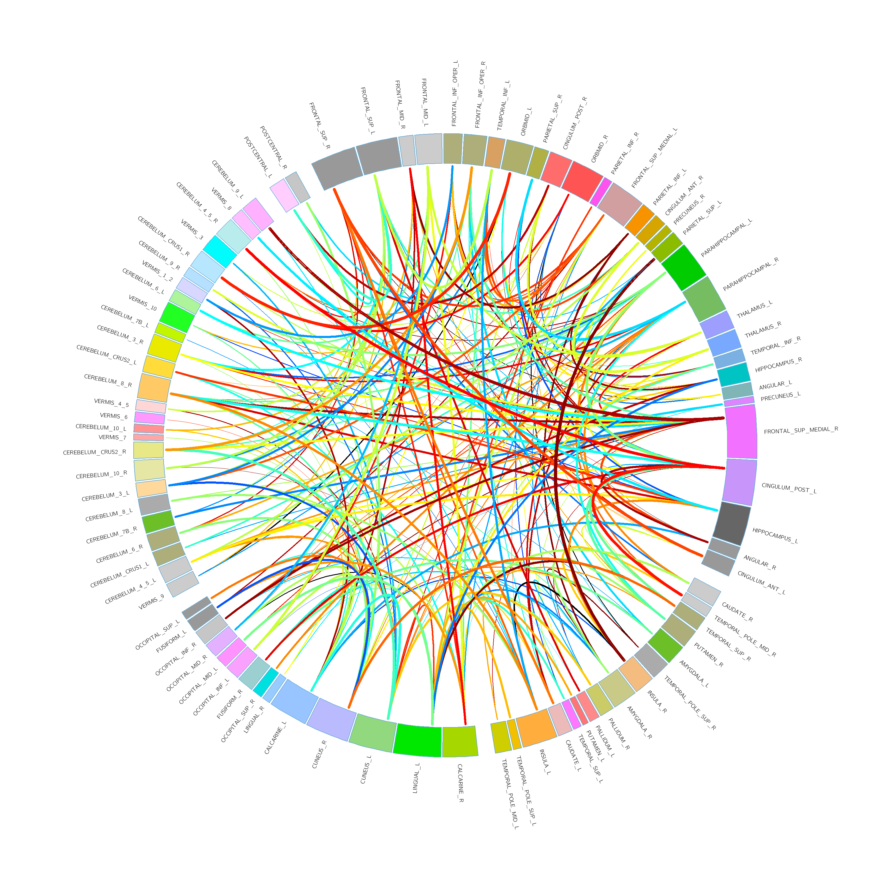

circos简介
circos是设计用来专门绘制基因图的，但是其应用并不仅仅局限于此，它能胜任任何需要绘制环状图像的地方。
例如在认知神经科学中表示脑区之间的连接。本教程旨在实现绘制以下图像：
该图主要由几个部分组成：
1 chromosome（染色体）； 2 label（标签）；3 links（连接）; 4 间隔
我们要实现这样一个任务：
用chromosome表示脑区，用chromosome长度表示与脑区的关联量，例如脑区体素数量;
用links表示脑区之间的连接,用links线的颜色和粗细以及层次表示连接的强度（例如，连接越强，颜色越鲜艳，线越粗，越靠上层）;
用间隔表示分组，例如分成大脑和小脑。
circos安装
circos是运行在perl环境下的跨平台的工具包，只要安装好perl环境，直接解压缩circos的代码就能运行。
安装perl环境
Linux下可以直接安装perl,windows最好使用集成环境，例如Strawberry Perl
Strawberry Perl windows 7 旗舰版 64位安装包下载地址: http://strawberryperl.com/download/5.24.0.1/strawberry-perl-5.24.0.1-64bit.msi
安装过程和普通的Windows程序没有区别，一路下一步就可以。

安装完成后，打开CMD，输入perl -v, 出现版本信息就证明安装成功了。
下载circos
circos主程序：http://circos.ca/distribution/circos-0.69-3.tgz
circos示例程序：http://circos.ca/distribution/circos-tutorials-0.67.tgz
下载完后解压缩到任意位置（需要解压缩两次，推荐用7z）,切换到bin目录下，键入circos:
如果出现missing …是因为有些circos需要的模块没有安装。
安装perl模块
在CMD键入cpan命令，进入cpan环境
输入install 模块名 就会完成自动下载安装过程。 模块名可以从上面的报错信息中找到。
丢失的模块全部完后，可以按照一下方法做一个测试。
在bin文件夹下面新建一个test文件夹，test内新建一个名称为helloword.conf的文件。1
2
3
4
5
6
7
8
9
10
11
12
13
14
15
16
17
18
19
20
21
22
23
24
25
26
27
28
29
30
31
32
33
34
35
36
37
38
39
40
41
42
43
44
45
46
47
48
49
50
51
52
53
54
55
56
57
58
59
60
61
62
63
64
65
66
67
68
69
70# MINIMUM CIRCOS CONFIGURATION
#
# The 'hello world' Circos tutorial. Only required
# configuration elements are included.
#
# Common optional elements are commented out.
# Defines unit length for ideogram and tick spacing, referenced
# using "u" prefix, e.g. 10u
#chromosomes_units = 1000000
# Show all chromosomes in karyotype file. By default, this is
# true. If you want to explicitly specify which chromosomes
# to draw, set this to 'no' and use the 'chromosomes' parameter.
# chromosomes_display_default = yes
# Chromosome name, size and color definition
karyotype = data/karyotype/karyotype.human.txt
<ideogram>
<spacing>
# spacing between ideograms
default = 0.05r
</spacing>
# ideogram position, thickness and fill
radius = 0.20r
thickness = 100p
fill = yes
#stroke_thickness = 1
#stroke_color = black
# ideogram labels
# <<include ideogram.label.conf>>
# ideogram cytogenetic bands, if defined in the karyotype file
# <<include bands.conf>>
</ideogram>
# image size, background color, angular position
# of first ideogram, transparency levels, output
# file and directory
#
# it is best to include these parameters from etc/image.conf
# and override any using param* syntax
#
# e.g.
# <image>
# <<include etc/image.conf>>
# radius* = 500
# </image>
<image>
<<include etc/image.conf>> # included from Circos distribution
</image>
# RGB/HSV color definitions, color lists, location of fonts,
# fill patterns
<<include etc/colors_fonts_patterns.conf>> # included from Circos distribution
# debugging, I/O an dother system parameters
<<include etc/housekeeping.conf>> # included from Circos distribution
# <ticks> blocks to define ticks, tick labels and grids
#
# requires that chromosomes_units be defined
#
# <<include ticks.conf>>
然后在CMD输入命令perl circos -conf test\helloword.conf,会有类似下面的输出
默认会在当前目录下生成circos.png 和 circos,svg两个文件
至此，完成了circos的安装，生成了一个最简单的图像。
circos基本概念
组织结构
circos 生成图像所需要的所有内容都保存在一个配置文件中，例如 helloword.conf
这个配置文件以XML的格式来组织。
<ideogram></ideagram>标签内定义chromosome的相关属性，例如radius，thickness，fill，， ， 1
2
3
4
5
6
7
8
9
10
11
12
13
14
15
16
17
18
19
20
21
22<ideogram>
<spacing>
# spacing between ideograms
default = 0.05r
</spacing>
# ideogram position, thickness and fill
radius = 0.20r
thickness = 100p
fill = yes
#stroke_thickness = 1
#stroke_color = black
# ideogram labels
# <<include ideogram.label.conf>>
# ideogram cytogenetic bands, if defined in the karyotype file
# <<include bands.conf>>
</ideogram><image></image>标签内定义生成的图像的一些属性，例如生成路径，文件名等1
2
3
4
5
6
7
8<image>
<<include etc/image.conf>>
# generated image path
dir* = D:\FMRI_ROOT\YIYU\CONN\PNG
# generated image name
file* = 1.png
</image><links></links>标签内可定义若干标签，每一对都是一组连接1
2
3
4
5
6
7
8
9
10
11
12
13
14
15
16
17
18
19
20
21
22
23
24
25
26
27
28
29<links>
#ribbon = yes
#flat = yes
<link>
file = links1000.data.txt # links 文件路径
radius = 0.99r
color = red
# Curves look best when this value is small (e.g. 0.1r or 0r)
bezier_radius = 0.1r
thickness = 2
# These parameters have default values. To unset them
# use 'undef'
#crest = undef
#bezier_radius_purity = undef
# Limit how many links to read from file and draw
record_limit = 40000
#<rule>
#condition = var(intrachr) && abs(var(pos1)-var(pos2)) < 10Mb
#show = no
#color = red
#</rule>
</link>
</links>karyotype定义染色体文件路径1
karyotype = brainnetome.data.txt
染色体文件
染色体文件在配置文件中用关键字karyotype = data.txt指明。染色体就是环上要显示的实体。数据格式如下：1
2
3
4b parent ID label start end color options
chr - hs1 g1 0 100 red thickness=3
chr - hs2 g2 0 88 blue color=blue,thickness=5
b 是circos中的保留关键字，可以是chr，代表该行定义的是染色体，可以是band，代表该行定义的是band. band就是染色体上一条染色带。
parent 定义该行的父元素，-表示没有父元素。
ID 该行的标识符，通过ID可以唯一的找到该行
label 将来显示在图像中的该染色体的名字
start 起始位置
end 终止位置
color 定义显示时的颜色
options 可选，前面的字段都是必须的，这里额外添加需要的内容，格式为key1=value1,key2=value2,key3=value3
注意 start end 可以用来控制染色体显示时候的相对比例，例如，如果希望所有的染色体都一样长，可以全部设为 0 1 或者全部设为0 100；
如果希望染色体体积越大越长，则可以start设置为0，end设置为每个染色体的体积。（这里体积只是举例，可以为染色体的任意一个属性）
连接文件
连接文件在<links><link> file = link.data.txt</link><links>中定义，它有两种格式：
第一种：1
2
3
4ID1 start1 end1 ID2 start2 end2 options 定义ID1到ID2的连接
hs1 0 1 hs2 0 1 color=red,thickness=2，z=100
hs1 1 2 hs3 0 1
第二种：1
2b1 ID1 start1 end1
b1 ID2 start2 end2 # 两行定义一个由ID1到ID2的连接
这里的ID都是指karyotype文件中定义的ID。
所以，要实现连接的变化，只需要在定义的每个连接后面定义好相应的颜色，线宽，层次就可以了。
颜色
默认的颜色定义在etc\colors.conf中，默认的颜色定义已经能够满足大部分的要求，使用的时候只需要指定其中的名称即可。
也可以定义自己的颜色文件，在etc\colors.conf添加<<include colors.me.conf>>,然后在etc下新建文件colors.me.conf
颜色文件的定义格式是：1
2
3colorname = R,G,B
black=0,0,0
white=255,255,255
显示配置选项
1 | <image> |
circos实例
要生成的图像：
所需文件：1
2
3
4
5
6
7
8
9
10test\me\circos.conf
test\me\ideogram.conf
test\me\ideogram.label.conf
test\me\ideogram.position.conf
test\me\links.me.conf
test\me\ticks.conf
test\me\bands.conf
test\me\brainnetome.data.txt
test\me\links50.data.txt
etc\colors.me.conf
链接: https://pan.baidu.com/s/1eSebD9w 密码: nham
CMD中键入命令perl circos -conf test\me\circos.conf,OK .

其中colors.me.conf是自己根据colorbar生成的颜色，用来实现不同的颜色代表不同的强度值的目的。
该颜色主题用红色代表最大值，用蓝色表示最小值，值又大变小的过程 对应着 颜色由暖变冷的过程。
下面贴上生成colors.me.conf的matlab代码：1
2
3
4
5
6
7
8
9
10
11
12
13
14
15
16% 生成color bar 原始数据集
% colorname1 R G B
% colorname2 R G B
% 产生颜色的种类
color_num = 60;
colors_unit = jet(color_num);
colors = colors_unit * 255;
fid=fopen('D:\FMRI_ROOT\TOOLS\circos-0.69-3\etc\colors.me.conf','w+');
for i =1:size(colors,1)
fprintf(fid,['mecolor',num2str(size(colors,1)-i+1),'=',num2str(colors(i,1)),',',num2str(colors(i,2)),',',num2str(colors(i,3)),'\n']);
end
fclose(fid);
colormap(colors_unit);
colorbar();
brainnetome.data.txt部分内容:1
2
3
4
5
6
7chr - SFG_L_7_1 SFG_L_7_1 0 100 chr0
chr - SFG_R_7_1 SFG_R_7_1 0 100 chr1
chr - SFG_L_7_2 SFG_L_7_2 0 100 chr2
chr - SFG_R_7_2 SFG_R_7_2 0 100 chr3
chr - SFG_L_7_3 SFG_L_7_3 0 100 chr4
chr - SFG_R_7_3 SFG_R_7_3 0 100 chr5
chr - SFG_L_7_4 SFG_L_7_4 0 100 chr6
colors.me.conf部分内容：1
2
3
4
5
6mecolor6=221,0,0
mecolor5=204,0,0
mecolor4=187,0,0
mecolor3=170,0,0
mecolor2=153,0,0
mecolor1=136,0,0
生成带分组的图形
先看一个示例

要想在染色体中间加入分割，可以在ideogram.conf文件中添加如下语句：1
2
3
4
5
6
7
8
9
10
11
12
13<spacing>
default = 0.001r # 每个染色体的间隔
break = 0.01r
axis_break_at_edge = yes
axis_break = yes
<pairwise Cingulum_Ant_L Caudate_R>
spacing = 10r
</pairwise> # 定义相邻的两个染色体的间隔
<pairwise Temporal_Pole_Mid_L Calcarine_R>
spacing = 10r
</pairwise>
</spacing>
这里需要注意的是，定义两个相邻的染色体之间的间隔的时候，如果用r为单位，是相对于default的倍数。
如果default设置成0，则无论多少倍都是0，这时候设置的特定的两个染色体的间隔也不会出现任何效果。